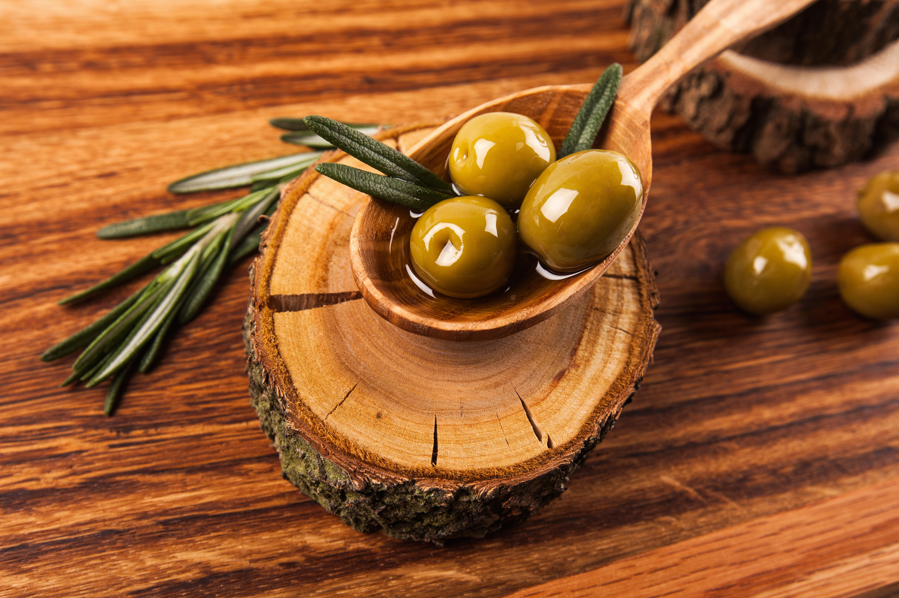

L’olivier de production :
Comme tous les arbres fruitiers, l’olivier est régulièrement taillé.
Il peut être taillé toute l’année, mais les mois de mars, avril et
mai sont les mois de la taille, entre les risques de gel et la floraison.
L’olivier est un arbre qui nécessite une taille annuelle.
Il faut discerner les tailles favorisant la production de fruits et
la taille purement esthétique.
La taille de formation
sur le jeune arbre, a pour but de former un monotronc en éliminant les branches
afin de renforcer la ligne centrale. Quand le jeune olivier atteint 1.50m,
il convient de lui donner une forme équilibrée et rationnelle pour son
exploitation.
La taille de fructification est pour sa part limitée à
l’entretien et à l’harmonisation. Elle est annuelle et ne doit pas être
trop sévère sinon elle irait à l’encontre de la régulation de la production
de l’olivier mais les tailles successives améliorent les récoltes.
LES MALADIES COURANTES DE L'OLIVIER
La taille de reprise ou de régénération
, généralement sévère, se pratique pour rénover un arbre devenu improductif
par vieillissement ou négligence. On ramène donc la végétation à un volume
plus faible et plus ramassé près du tronc.
L’olivier d’ornement :
La taille de l’olivier d’ornement est un acte subjectif à la base car
l’olivier est principalement destiné à la production d’olives.
La taille d’un olivier destiné à l’ornement se rapproche de la taille de
formation de l’olivier de production.
Le but de la taille est d’obtenir une charpente équilibrée formant au choix
une sorte de gobelet destiné à aérer la frondaison, une boule à l’aspect
décoratif ou tous autres styles donnants à l’arbre sa propre place dans
votre espace vitale.
Quand tailler un olivier ?
La Taille est traditionnellement effectuée en fin d’hiver (fin février,
début mars et en avril) et ce tous les ans afin de respecter le cycle
végétatif qui se fait sur deux ans. Il vous reste ensuite à lui donner
la forme qui vous conviendra le mieux.
Mais on dit toujours… ce qui plait à l’oeil, plait à la nature.
Une fois la taille effectuée vous aurez besoin d’un broyeur de végétaux
pour réduire au maximum les déchets et réutiliser sous forme de compost
les branches taillées
